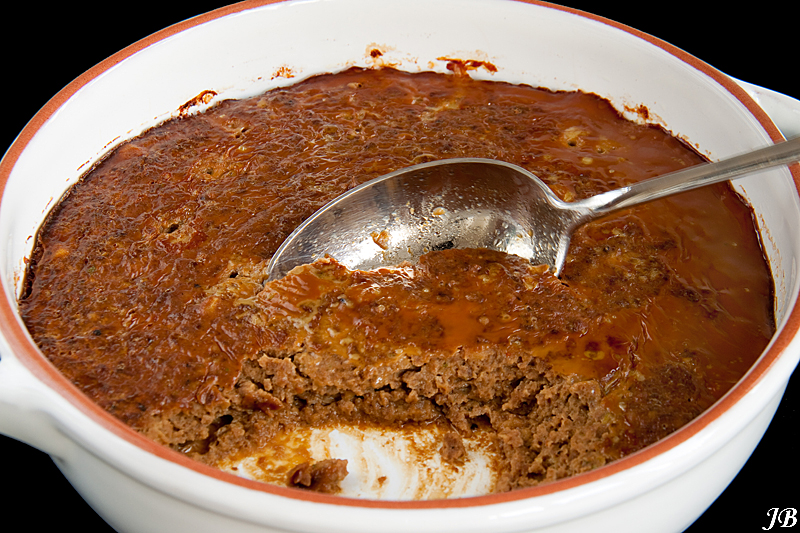

Frikandel Pan

The image above shows the indonesian dish Frikandel Pan. A meat loaf
created with beef minced meat, potatoes, spices and ketjap.
Ingredienten
- 500 gr. rundergehakt
- 3 gekookte aardappelen
- 2 eieren
- 1 teen knoflook
- kwart theelepel nootmuskaat
- 1 theelepel peper
- 1 theelepel kruidnager
- zout naar smaak
- scheutje melk
- boter
- ketsjap
Bereiding
- Verwarm de overn voor op 175 graden
- Pers de knoflook
- Kluts de eieren los
- Prak de aardappelen
-
Het gehakt goed mengen met de knoflook, kruiden, aardappelen eieren en
de melk
-
Een ovenschaal invetten, het gehakt erin scheppen en stevig aandrukken
- Hier en daar een klontje boter leggen
- De bovenkant bestrijken met ketsjap manis
- De schotel in 30 tot 45 min. in de over bruin baken
Terug naar Homepage